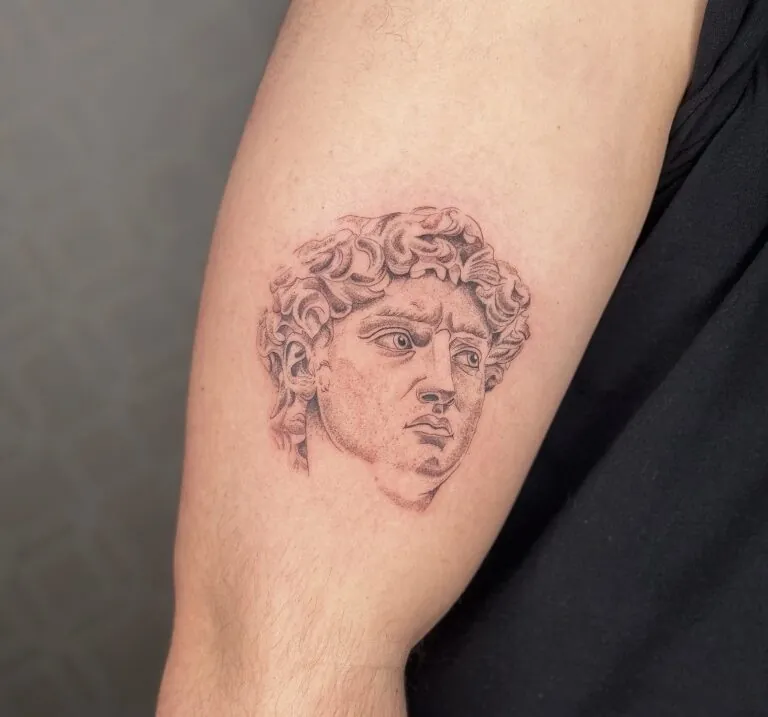
01
Black & Grey
Zachte schaduwen in zwart en grijs, opgebouwd met fijne naalden. Ideaal voor portretten, beelden, bloemen en dieren.
Ik ben Jo. Ik werk met fijne naalden en stipple shading, vooral in black & grey. Bloemen en dieren teken ik het liefst, maar kom gerust af met je eigen idee. Het ontwerp zit altijd in de prijs.
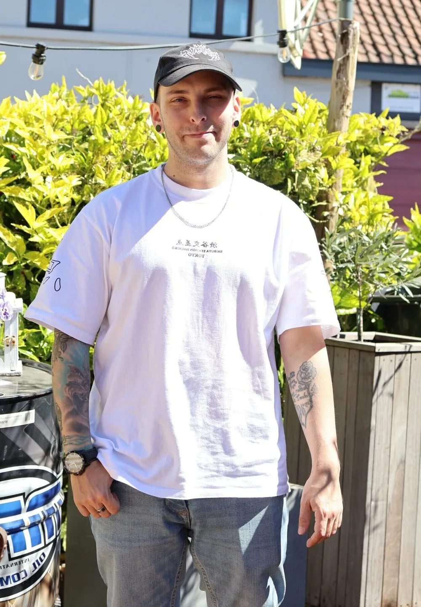
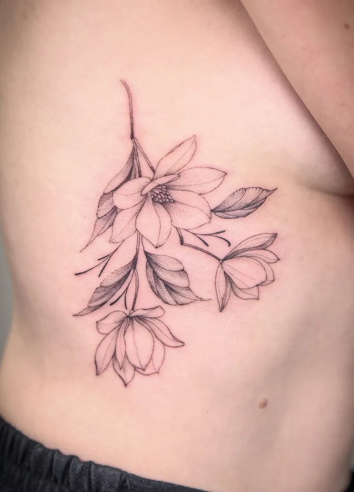
5,0★★★★★83 reviews op GoogleMijn hart ligt bij 3RL black & grey, met invloeden van realisme, neo traditional en dotwork. Daarnaast zet ik ook fineline, linework en blackwork.

Zachte schaduwen in zwart en grijs, opgebouwd met fijne naalden. Ideaal voor portretten, beelden, bloemen en dieren.
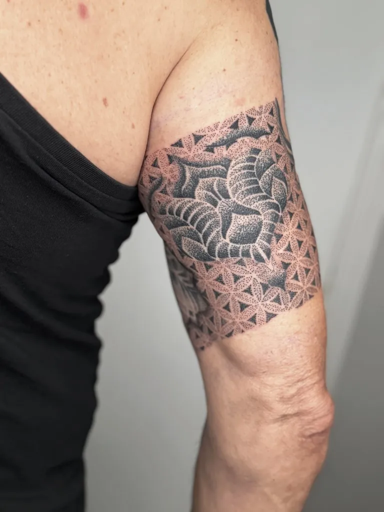
Pointillisme: honderden kleine stipjes die samen een vorm maken.
Twijfel je welke stijl bij jouw idee past? Daar zoeken we samen naar, voor er één lijn gezet wordt.
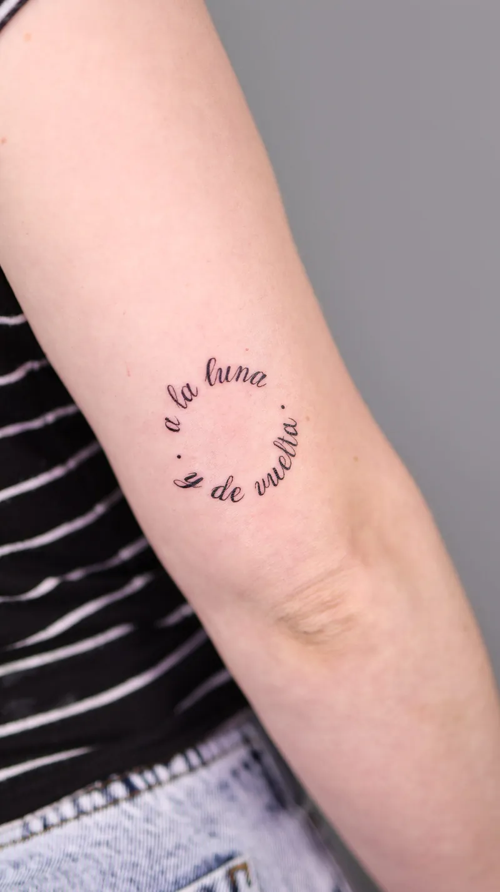
Strakke lijnen en minimalistische vormen.
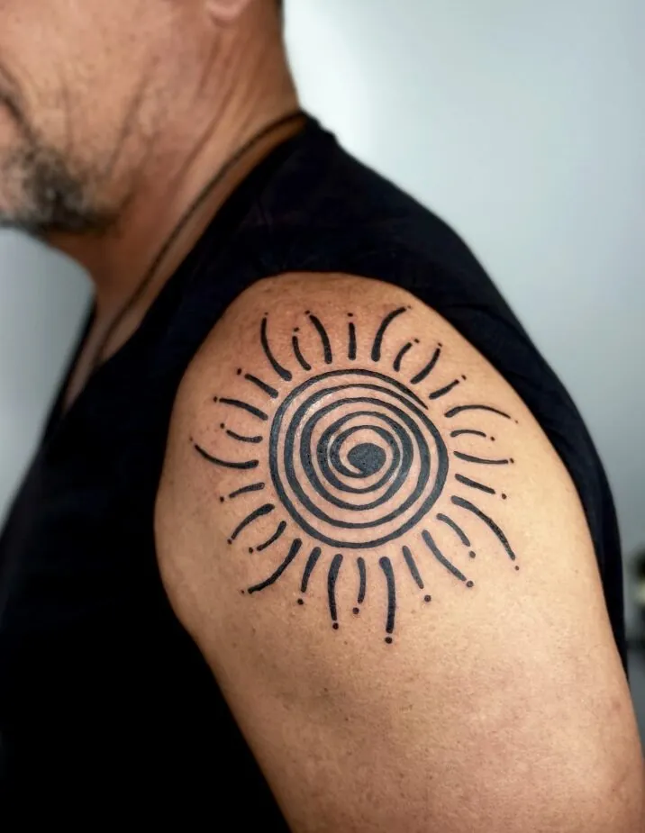
Puur zwart, grafisch en gedurfd.
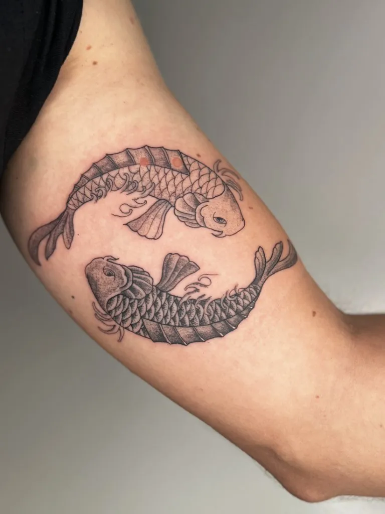
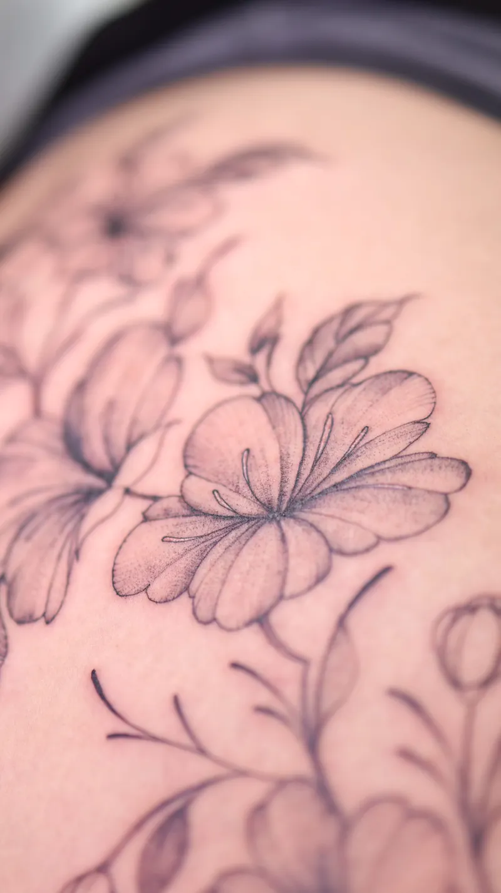
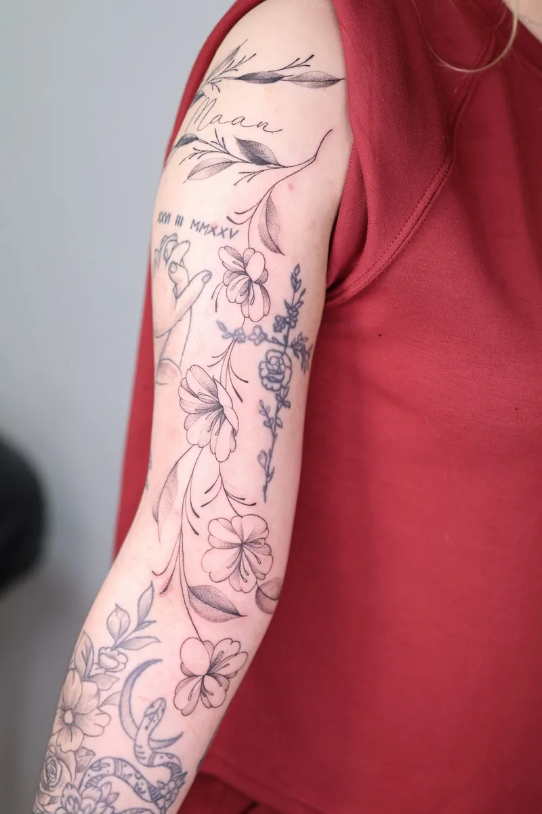
Een geboortebloem voor je dochter, een ontwerp ter ere van je grootvader, je eerste tattoo die je al jaren in je hoofd hebt. Ik luister eerst, dan pas begin ik te tekenen.
Wil je een tattoo die niemand anders heeft? Mijn wanna-do's zijn handgetekende ontwerpen die ik maar één keer tatoeëer. Kies er eentje, geef het nummer door en ik bevestig je afspraak.
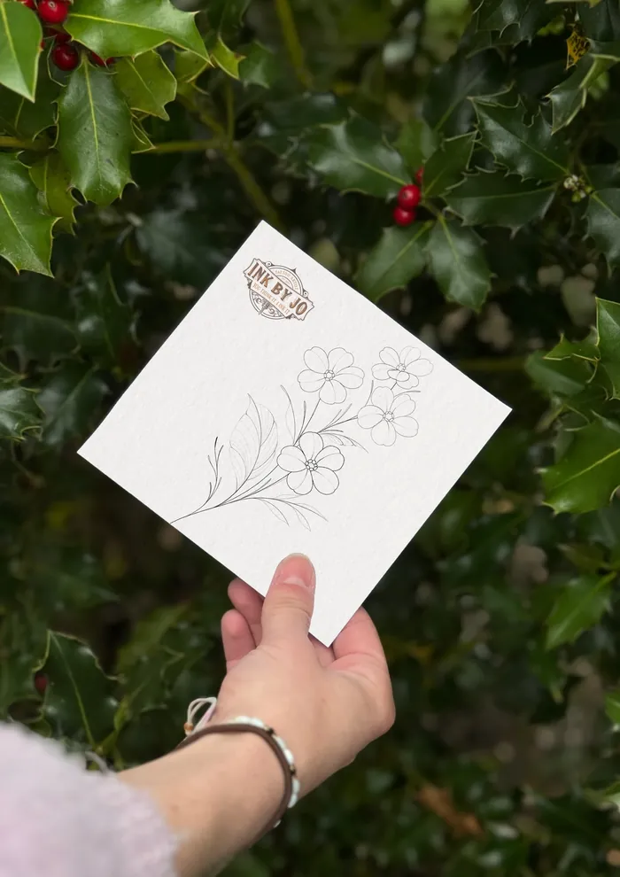
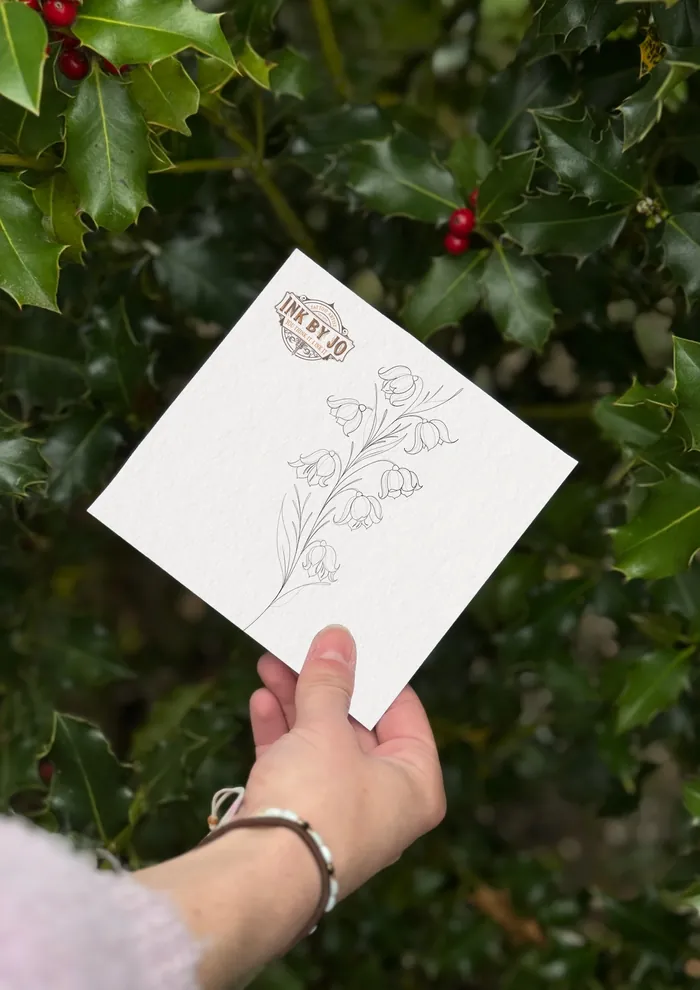
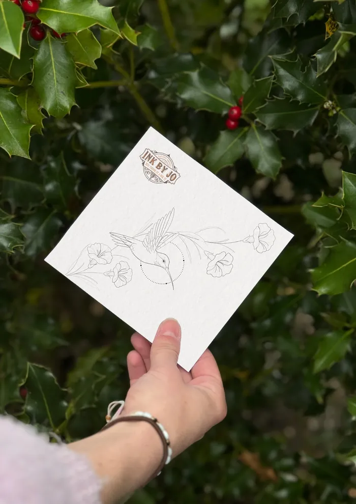
Een eigen idee dat er niet tussen staat? Ook goed. Boek je een afspraak, dan zit het ontwerp op maat al in de totaalprijs.
Vraag een wanna-do aanHoe duidelijker je idee, hoe beter ik het kan vertalen. Referentiebeelden of eigen schetsen zijn altijd welkom.
Beschrijf je tattoo, de plaats op je lichaam, de grootte en je budget.
Ik kijk wat technisch en esthetisch het mooiste resultaat geeft en werk je ontwerp uit.
We overlopen samen de laatste details. Pas als jij er helemaal achter staat, begin ik.
Je krijgt duidelijke uitleg mee naar huis, zodat je tattoo mooi geneest.
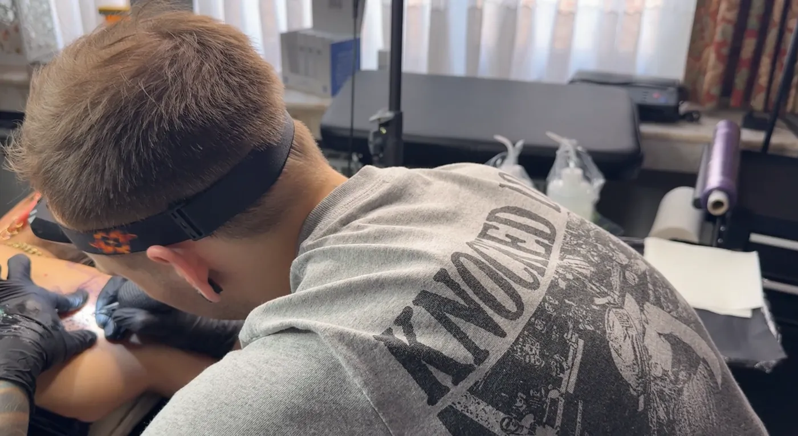
“Ik heb de naam van mijn dochtertje laten vereeuwigen langs een bloemenkrans. De tattoo werd eerst bijna volledig gefree-hand zodat het echt een uniek stuk werd.”
Zeer aangename kerel die weet wat hij doet. Door hem een tattoo laten ontwerpen ter ere van mijn overleden grootvader. Zeer knap ontwerp en goed gezet! Bedankt!
Zeer tevreden van jo zijn werk. Hij denkt heel goed na over een mooi concept te vinden die naar jou wens is. Ik liet 3 verschillende geboortebloemen zetten in een boeketje. Deze werd nog mooier dan ik in gedachten had.
Was mijn eerste keer, maar Jonathan heeft mij direct gerust gesteld. Heb er dan maar ineens 2 laten zetten 😁
2dagen geleden een 5u sessie achter de rug bij hem ! Prachtwerk geleverd , niks last tijdens het zetten , fijne afwerking , hij kent zijn job !
Stuur me je idee, of stel gewoon je vraag. Ik antwoord zelf.
Hoe meer details, hoe beter ik je idee kan vertalen.
Ik maakte deze demo voor jullie om te tonen wat er kan. Na een kort gesprek maak ik er iets veel persoonlijkers van, helemaal naar jullie wens.
Vrijblijvend. Ik kom langs of we bellen.
Op maat, op jullie eigen domein.
Geen voorschot. Jullie betalen pas als alles klaar is.
Hosting, domeinnaam en kleine wijzigingen, zoals nieuwe openingsuren.
Omdat een voorbeeld meer zegt dan een mail. Zo zien jullie meteen wat er kan, en het kost jullie niets.
Nee. Het gesprek is vrijblijvend. Vinden jullie het niks, dan is het daarmee gedaan.
Na ons gesprek staat jullie site binnen 10 tot 14 dagen online.
Zeker. Jullie domeinnaam kan gewoon blijven, de nieuwe site komt in de plaats van de oude.
Nee, dat doe ik op basis van ons gesprek. Eigen foto's zijn mooi meegenomen, maar niet nodig om te starten.